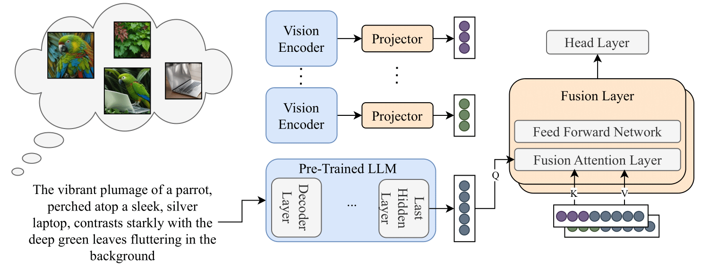

LaMI boosts LLM visual commonsense by generating multiple complementary images from text prompt, then late-fusing their evidence into the LLM’s prediction.
Commonsense reasoning often requires both textual and visual knowledge, yet Large Language Models (LLMs) trained solely on text lack visual grounding (e.g., "what color is an emperor penguin's belly?"). Visual Language Models (VLMs) perform better on visually grounded tasks but face two limitations: (i) often reduced performance on text-only commonsense reasoning compared to text-trained LLMs, and (ii) adapting newly released LLMs to vision input typically requires costly multimodal training. An alternative augments LLMs with test-time visual signals, improving visual commonsense without harming textual reasoning, but prior designs often rely on early fusion and a single image, which can be suboptimal.
We propose a late multi-image fusion method: multiple images are generated from the text prompt with a lightweight parallel sampling, and their prediction probabilities are combined with those of a text-only LLM through a late-fusion layer that integrates projected visual features just before the final prediction. Across visual commonsense and NLP benchmarks, our method significantly outperforms augmented LLMs on visual reasoning, matches VLMs on vision-based tasks, and, when applied to strong LLMs such as LLaMA 3, also improves NLP performance while adding only modest test-time overhead.
LaMI enhances language models with visual cues to improve object and visual commonsense reasoning while preserving text-only performance. The architecture consists of four components: a frozen pre-trained LLM, a frozen pre-trained vision encoder, a trainable Visual Token Projector (VTP), and a trainable Late Fusion Attention Layer (LFAL).

Figure 2. Overview of LaMI. Multiple images are generated from the input text and independently encoded by a frozen vision encoder, then projected to pseudo-text tokens. In parallel, the text is processed by a frozen pre-trained LLM. A trainable late-fusion attention layer allows the LLM's final text representations to attend to the projected visual tokens, combining both modalities before the prediction head. Blue: frozen; orange: trainable.
Late Fusion Architecture. The vision encoder extracts patch features, which the VTP maps to pseudo-text embeddings. The LFAL fuses these with text embeddings by allowing text tokens to attend once to visual tokens immediately before projecting to vocabulary logits. This design keeps the LLM focused on language while enabling access to visual information when helpful.
Multi-Image Evidence at Inference. Since paired images are unavailable at test time, k images are generated from the input text using a distilled text-to-image generator with batched, parallel sampling. Each generated image is processed through the late-fusion module to produce a probability distribution, which is then aggregated with the text-only distribution using entropy-aware, CLIP-based weighting.
LaMI substantially improves performance across all object commonsense tasks compared to prior visually-augmented language models, while using equal or less multimodal training data.
| Model | Mem. Color | Color Terms | Obj. Shape | Rel. Size |
|---|---|---|---|---|
| Masked Language Models | ||||
| BERT | 31.6 | 30.7 | 28.1 | 38.1 |
| BERT (FT) | 33.9 | 31.5 | 21.5 | 35.7 |
| Vokenization* | 14.2 | 20.0 | 43.2 | 72.4 |
| X-adapter* | 64.1 | 60.0 | - | - |
| LaMI‡ | 74.5 | 72.5 | 67.3 | 78.4 |
| Causal Language Models | ||||
| GPT-2 | 32.4 | 34.6 | 44.5 | 43.1 |
| GPT-2 (FT) | 33.3 | 34.9 | 39.3 | 38.2 |
| LiVE‡ | 49.6 | 46.7 | 41.5 | 66.7 |
| Z-LaVI*† | 50.4 | 49.2 | 64.4 | 76.8 |
| VaLM* (k=4) | 54.0 | 52.7 | 62.8 | 85.0 |
| VaLM* (k=8) | 58.6 | 50.2 | 59.4 | 62.4 |
| LaMI‡ | 72.5 | 69.2 | 66.8 | 85.5 |
* retrieves images; † zero-shot; ‡ generates images during inference.
Both late fusion and multi-image generation independently contribute to performance. Their combination achieves the best overall results.
| Method | Mem. Color | Color Terms | Obj. Shape | Rel. Size |
|---|---|---|---|---|
| GPT-2 (Base) | 32.4 | 34.6 | 44.5 | 43.1 |
| Early Fusion | 49.1 | 45.3 | 40.3 | 70.1 |
| Early Fusion + Multi | 55.5 | 52.1 | 41.2 | 75.5 |
| Intermediate Fusion | 62.8 | 59.3 | 60.0 | 77.2 |
| Intermediate Fusion + Multi | 69.7 | 67.8 | 63.0 | 81.1 |
| Late Fusion | 65.1 | 62.2 | 63.5 | 80.2 |
| Late Fusion + Multi (Ours) | 72.5 | 69.2 | 66.8 | 85.5 |
LaMI consistently improves LMs across all scales. Unlike VLMs, which often improve visual commonsense at the cost of text-task performance, LaMI enhances visual commonsense while maintaining or improving text-based results.
| Model | Base | VC | CR | RC | Avg. |
|---|---|---|---|---|---|
| Small-Scale Models | |||||
| GPT-2 | - | 30.3 | 46.1 | 30.5 | 35.6 |
| LaMI | GPT-2 | 38.6 | 46.7 | 32.2 | 39.2 |
| Mid-Scale Models | |||||
| Gemma-2B | - | 45.6 | 63.8 | 48.8 | 52.7 |
| LaMI | Gemma-2B | 50.1 | 65.1 | 48.9 | 54.7 |
| Large-Scale Models | |||||
| Vicuna-7B | - | 45.1 | 57.6 | 57.5 | 53.4 |
| InstructBLIP* | Vicuna-7B | 50.1 | 52.6 | 53.6 | 52.1 |
| Llava-Next* | Vicuna-7B | 50.3 | 54.5 | 54.7 | 53.1 |
| LaMI | Vicuna-7B | 48.6 | 58.8 | 57.9 | 55.1 |
| Llama3-8B | - | 52.0 | 72.0 | 57.9 | 60.6 |
| LaMI | Llama3-8B | 55.0 | 72.9 | 58.0 | 62.0 |
| Large-Scale Instruct Models | |||||
| Llama3-8B-Instruct | - | 53.0 | 71.6 | 59.2 | 61.2 |
| Llava-Next* | Llama3-8B-Inst. | 56.5 | 70.8 | 54.8 | 60.7 |
| LaMI | Llama3-8B-Inst. | 55.6 | 71.7 | 60.9 | 62.7 |
| Qwen-2.5-7B-Instruct | - | 54.8 | 75.6 | 63.0 | 64.4 |
| Qwen2-VL-7B-Instruct* | Qwen-2.5-7B-Inst. | 59.0 | 74.4 | 57.9 | 63.7 |
| LaMI | Qwen-2.5-7B-Inst. | 57.8 | 75.9 | 64.4 | 66.0 |
* VLM trained on large-scale image-text data. VC = Visual Commonsense, CR = Commonsense Reasoning, RC = Reading Comprehension.
Representative examples using Llama-3 illustrating the behavior of LaMI.
"How many humps does a Bactrian camel have?"
Llama-3 predicts one, confusing Dromedary and Bactrian species. LaMI generates images of two-humped camels, correcting the prediction to two.
"Which color is not on a stop sign?"
The generator produces a red stop sign, which is misleading under negation. However, the low CLIP alignment score suppresses the visual path, and LaMI falls back to the text-only prediction, correctly outputting blue.
"What material holds the Sword of Damocles?"
Llama-3 predicts a thin rope. LaMI generates images depicting a metal chain—a visually plausible but incorrect depiction (the correct answer is a single horse hair). The high alignment score causes the visual path to override the text prior. Such failures are more likely for abstract or legendary concepts where text-to-image generators lack faithful grounding.
@inproceedings{yariv2026lami,
title = {{LaMI}: Augmenting Large Language Models via Late Multi-Image Fusion},
author = {Guy Yariv and Idan Schwartz and Yossi Adi and Sagie Benaim},
booktitle = {Proceedings of the 64th Annual Meeting of the Association for Computational Linguistics (Volume 2: Short Papers)},
year = {2026},
publisher = {Association for Computational Linguistics},
url = {https://aclanthology.org/2026.acl-short.3/},
doi = {10.18653/v1/2026.acl-short.3},
pages = {18--26},
}